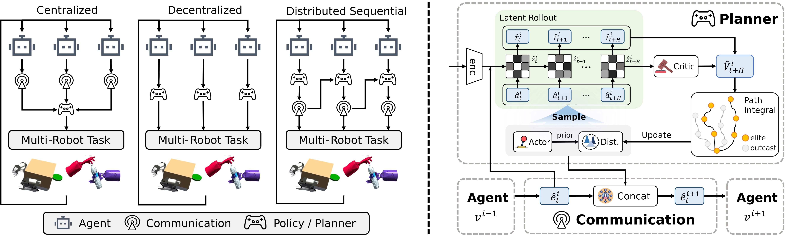
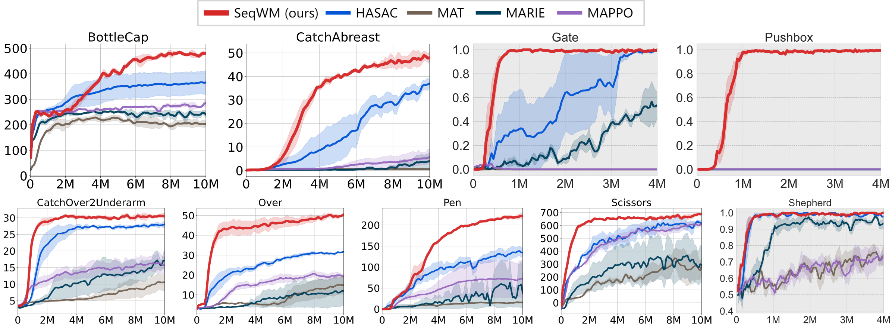
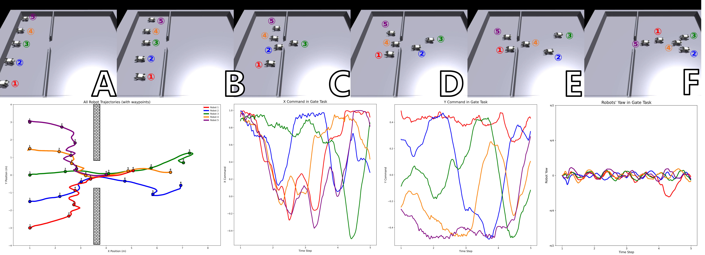

ICLR 2026
SeqWM: Empowering Multi-Robot Cooperation via Sequential World Models
1 School of Artificial Intelligence, University of Chinese Academy of Sciences
2 SKL-MAIS, Institute of Automation, Chinese Academy of Sciences
Plan with your teammates’ predictions.
Sequential world models turn shared intentions into coordinated actions.
Abstract
Model-based reinforcement learning (MBRL) has achieved remarkable success in robotics due to its high sample efficiency and planning capability. However, extending MBRL to physical multi-robot cooperation remains challenging due to the complexity of joint dynamics. To address this challenge, we propose the Sequential World Model (SeqWM), a novel framework that integrates the sequential paradigm into multi-robot MBRL. SeqWM employs independent, autoregressive agent-wise world models to represent joint dynamics, where each agent generates its future trajectory and plans its actions based on the predictions of its predecessors. This design lowers modeling complexity and enables the emergence of advanced cooperative behaviors through explicit intention sharing. Experiments on Bi-DexHands and Multi-Quadruped demonstrate that SeqWM outperforms existing state-of-the-art model-based and model-free baselines in both overall performance and sample efficiency, while exhibiting advanced cooperative behaviors such as predictive adaptation, temporal alignment, and role division. Furthermore, SeqWM has been successfully deployed on physical quadruped robots, validating its effectiveness in real-world multi-robot systems.
Method
Sequential prediction. Cooperative planning.
Decompose complex joint dynamics into independent agent-wise world models, connected through predictions of future trajectories.

01 · Predict
Each agent models its own dynamics, conditioned on the predictions of preceding agents.
02 · Share
Predicted trajectories communicate intentions explicitly along the agent sequence.
03 · Plan
Each agent performs multi-step lookahead in its own action space while accounting for its teammates.
Experiments
Cooperation across tasks.
SeqWM is evaluated on Bi-DexHands and Multi-Quadruped, with deployment on physical Unitree Go2-W robots.

Real-world cooperation
Sim-to-real transfer to a team of two Unitree Go2-W robots.
Bi-DexHands
Coordinated object transfer and precise bimanual manipulation.
Multi-Quadruped
Cooperation among two to five quadruped robots in simulation.
Advanced cooperative behaviors
Learning when to lead and when to yield.
Shared predictions support predictive adaptation, temporal alignment, and role division.

Citation
BibTeX
@inproceedings{zhao2026seqwm,
title = {Empowering Multi-Robot Cooperation via Sequential World Models},
author = {Zijie Zhao and Honglei Guo and Shengqian Chen and Kaixuan Xu and Bo Jiang and Yuanheng Zhu and Dongbin Zhao},
booktitle = {The Fourteenth International Conference on Learning Representations},
year = {2026},
url = {https://openreview.net/forum?id=IvUM6UwYCJ}
}